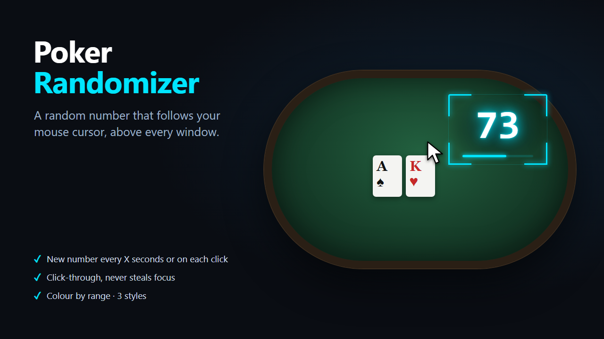

Vos charts préflop, toujours à côté de la table.
Déposez des captures d’écran de vos charts. Expresso Charts les transforme en un style unique et lisible, et remplit l’espace libre à côté de vos tables, sur tous vos écrans.
Windows 10 / 11 · Français & English · Vos charts restent sur votre PC · Résiliable à tout moment

Les panneaux occupent l’espace libre à côté de vos tables et ne les couvrent jamais.
Tout ce qu’il faut pendant vos sessions
Conçu pour les formats rapides à 3 joueurs, où il faut le bon chart d’un coup d’œil, sans rien qui gêne.
Import depuis des captures
Collez ou déposez des images, même plusieurs à la fois. Chaque chart de l’image est détecté automatiquement, même 8 sur une seule capture, et les nombres, couleurs, titres et noms de légende sont lus pour vous.
Un style unique
Les charts de coachs et d’outils différents prennent les mêmes couleurs et la même présentation : vous les lisez instantanément. Vous préférez l’aspect d’origine ? Gardez les couleurs d’un chart d’une simple case à cocher. Entièrement modifiable.
Remplit l’espace libre
Les panneaux se placent automatiquement à côté de vos tables et suivent leurs déplacements. Écran principal rempli de tables ? Ils passent sur votre deuxième écran. Ou préparez vos propres emplacements en mode entraînement.
Charts à nombres et d’actions
Charts de tapis (8.5, 17+…) et charts en couleur (all-in, limp, fold) avec des cases mixtes pour les stratégies mixtes et une légende avec les pourcentages de range.
Dispositions et raccourcis
Préparez plusieurs dispositions et choisissez-en une avec Ctrl+Alt+1…9 avant de vous asseoir ; elle reste fixe tant que Winamax est ouvert. Verrouillez les positions avec Ctrl+Alt+L, masquez les charts avec le petit × ou Ctrl+Alt+H. Clic droit pour agrandir.
Confidentiel par conception
Vos charts sont stockés uniquement sur votre ordinateur, chiffrés. Rien n’est envoyé en ligne. Les fenêtres de l’application ne peuvent pas être capturées ni partagées à l’écran.
Sauvegardes automatiques
Une sauvegarde chiffrée de vos charts et dispositions est enregistrée sur votre PC chaque semaine, et vous pouvez restaurer l’une des 8 dernières en un clic.
Français & English
Toute l’application est disponible en français et en anglais. Elle suit la langue de Windows, ou choisissez-la dans les réglages.
Prêt quand vous l’êtes
Installation rapide, sans droits d’administrateur. Peut démarrer avec Windows, réduit, pour que vos charts soient prêts avant d’ouvrir Winamax. Les mises à jour s’installent en un clic.
Comment ça marche
Quelques minutes de configuration, ensuite il suffit d’ouvrir vos tables.
Importez vos charts
Collez une capture d’écran (Ctrl+V), déposez une image ou ouvrez plusieurs fichiers à la fois. Chaque chart est détecté et lu automatiquement, nombres comme couleurs.
- Une capture peut contenir plusieurs charts.
- Les titres et les noms de légende sont lus pour vous.
- Les cases difficiles à lire sont signalées pour une vérification rapide.

Mettez-les au propre
Corrigez une case d’un clic, renommez les actions, peignez des stratégies mixtes et ajoutez une légende. Tous les charts suivent le même style de couleurs.

Choisissez une disposition et jouez
Cochez les charts qui font partie d’une disposition. Quand vos tables s’ouvrent, les charts apparaissent dans l’espace libre à côté, sur tous vos écrans.
- Choisissez votre disposition avec Ctrl+Alt+1…9 avant de jouer : tant que Winamax est ouvert, elle reste fixe. Ctrl+Alt+L verrouille ou déverrouille les positions.
- Mode entraînement : préparez votre disposition avant de jouer avec des tables fictives que vous placez là où iront vos vraies tables.
- Vos tables remplissent l’écran principal ? Les charts passent sur votre deuxième écran.

Pensé pour le fair-play
Expresso Charts est un outil de référence : il affiche les charts que vous avez préparés avant de jouer, rien de plus.
Ce qu’il fait
- Affiche vos propres charts statiques, préparés à l’avance
- Lit seulement l’emplacement de vos fenêtres de table, pour placer les charts à côté
- Garde les mêmes charts pendant toute la session ; le changement de disposition est verrouillé tant que le client de poker est ouvert
- Verrouille la bibliothèque et l’éditeur de charts tant que le client de poker est ouvert
Ce qu’il ne fait jamais
- Lire les cartes, les tapis, les positions ou l’historique des mains
- Choisir un chart à votre place selon le jeu
- Cliquer, taper ou agir dans le client de poker
- Envoyer vos charts ou vos données où que ce soit
Expresso Charts est un produit indépendant, sans lien avec Winamax ni aucun site de poker, et n’est ni approuvé ni soutenu par eux. Chaque site de poker fixe ses propres règles concernant les logiciels tiers. Vérifiez les règles du site sur lequel vous jouez avant d’utiliser un outil.
Des abonnements mensuels simples
Toutes les offres incluent toutes les fonctions ; elles ne diffèrent que par le nombre d’écrans utilisés par les charts. Une licence par ordinateur. Prix HT : la TVA de votre pays est ajoutée lors du paiement lorsqu’elle s’applique. Résiliable à tout moment.
Basic
- 1 écran
- Toutes les fonctions
- Charts et dispositions illimités
- Mises à jour en un clic
Pro
- Jusqu’à 2 écrans
- Toutes les fonctions
- Les charts passent sur le 2e écran quand le 1er est plein
- Aide prioritaire par e-mail
Unlimited
- Nombre d’écrans illimité
- Toutes les fonctions
- Aide prioritaire par e-mail
- Pour les grinders multi-écrans
Envie d’essayer d’abord ? Téléchargez l’application, puis demandez-nous un code d’essai gratuit de 3 jours avec le code machine qu’elle affiche. L’essai comprend jusqu’à 2 charts sur 1 écran.
Pour les écoles de poker et les coachs
Donnez à vos élèves les mêmes charts, dans le même style, à la table. Plus vous prenez de places, moins chacune coûte.
| Places | Prix par place | Économie |
|---|---|---|
| 1–4 | 17 € / mois | prix Pro normal |
| 5–9 | 13,60 € / mois | 20 % |
| 10–24 | 11,90 € / mois | 30 % |
| 25+ | 10,20 € / mois | 40 % |
Inclus pour les écoles
- Fonctions Pro sur chaque place (jusqu’à 2 écrans)
- Votre propre pack de charts : créez les charts une fois et donnez à vos élèves un fichier chiffré qu’ils importent en un clic
- Une seule facture par mois pour toutes les places
- Ajoutez ou retirez des places selon votre liste d’élèves
- Codes d’activation de tous les élèves envoyés ensemble
Prix par place et par mois, HT (TVA en sus lorsqu’elle s’applique). Facturation annuelle et groupes plus importants sur demande.
Demander une offre écoleQuestions
Est-ce autorisé sur Winamax ?
Expresso Charts affiche uniquement des charts statiques que vous avez préparés vous-même, ne lit jamais le jeu, ne choisit jamais un chart à votre place et verrouille l’éditeur de charts tant que le client de poker est ouvert. Chaque site de poker fixe ses propres règles et peut les modifier : vérifiez les règles en vigueur du site sur lequel vous jouez. Vous êtes responsable de l’usage que vous faites du logiciel.
Sur quels ordinateurs fonctionne-t-il ?
Windows 10 et Windows 11 (64 bits). Installez-le avec le petit programme d’installation (sans droits d’administrateur), ou utilisez la version portable si vous préférez un seul fichier qui fonctionne sans installation.
Comment l’activer ?
Après votre abonnement, suivez les étapes d’activation de votre e-mail d’achat : lancez l’application, ouvrez la page Licence et saisissez-y votre code. Chaque licence fonctionne sur un ordinateur à la fois.
Puis-je importer plusieurs charts depuis une seule capture ?
Oui. L’application trouve automatiquement chaque grille de chart dans l’image, même une planche de huit charts, et lit chacun d’eux. Vous pouvez toujours tracer un cadre à la main si un chart est manqué.
Y a-t-il un essai gratuit ?
Oui : 3 jours, avec jusqu’à 2 charts sur 1 écran, pour voir comment cela fonctionne avec vos propres charts et vos tables. Téléchargez l’application et envoyez-nous le code machine qu’elle affiche pour recevoir un code d’essai.
Comment fonctionnent les mises à jour ?
Quand une nouvelle version sort, une barre apparaît en haut de l’application. Cliquez sur Mettre à jour : la mise à jour se télécharge en arrière-plan pendant que vous continuez à utiliser l’application, puis cliquez sur Redémarrer maintenant, ou elle s’installe toute seule à la prochaine fermeture de l’application. Chaque mise à jour est signée numériquement et vérifiée avant son installation.
Où sont stockés mes charts ?
Uniquement sur votre ordinateur, chiffrés. Ils ne sont jamais envoyés en ligne. L’application garde aussi des sauvegardes chiffrées hebdomadaires sur votre PC, et vous pouvez exporter un pack chiffré pour transférer vos charts sur un autre PC.
L’application est-elle en français ?
Oui. L’application est entièrement traduite en français et passe automatiquement en français quand Windows est en français. Vous pouvez aussi choisir la langue dans les réglages.
Quelque chose ne fonctionne pas. Comment obtenir de l’aide ?
Ouvrez la page Licence de l’application et cliquez sur Enregistrer le diagnostic, puis envoyez-nous le fichier par e-mail. Il contient la version de l’application, la configuration des écrans, les réglages et les messages d’erreur, mais jamais vos charts.
Proposez-vous des tarifs de groupe ou pour les écoles ?
Oui. Les écoles de poker, les coachs et les équipes bénéficient de jusqu’à 40 % de réduction par place. Voir Pour les écoles de poker et demandez-nous une offre.
Comment résilier ?
À tout moment, via le lien de votre e-mail d’achat. Votre abonnement reste actif jusqu’à la fin de la période payée.
Autres outils
De petits outils Windows du même créateur, achetés une fois et à vous pour toujours.

Poker Randomizer
Un nombre aléatoire qui suit le curseur de votre souris, au-dessus de toutes les fenêtres. Idéal pour mixer votre stratégie (par exemple relancer sur 1–30, suivre sur 31–100) sans quitter la table des yeux.
- Nouveau nombre toutes les X secondes, ou après chaque clic
- Les clics passent à travers, la table garde le focus
- 3 styles (Minimal, Néon, HUD), vos couleurs, couleur par plage
- Très léger (environ 120 Ko), Windows 10 / 11, activation pour un ordinateur
Téléchargez-le d’abord : l’app affiche le code machine à saisir lors du paiement. Votre code d’activation arrive par e-mail, en général sous 24 heures.